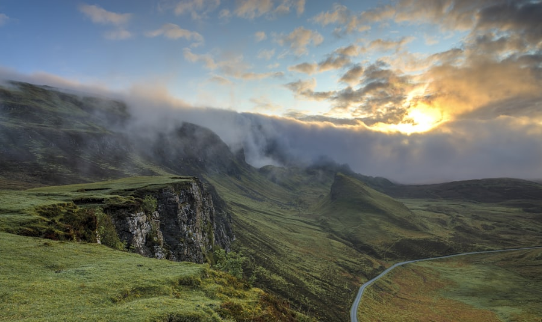
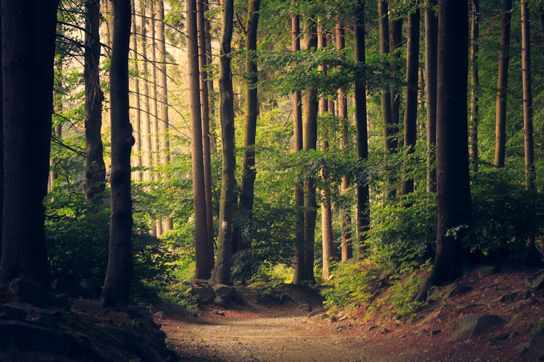
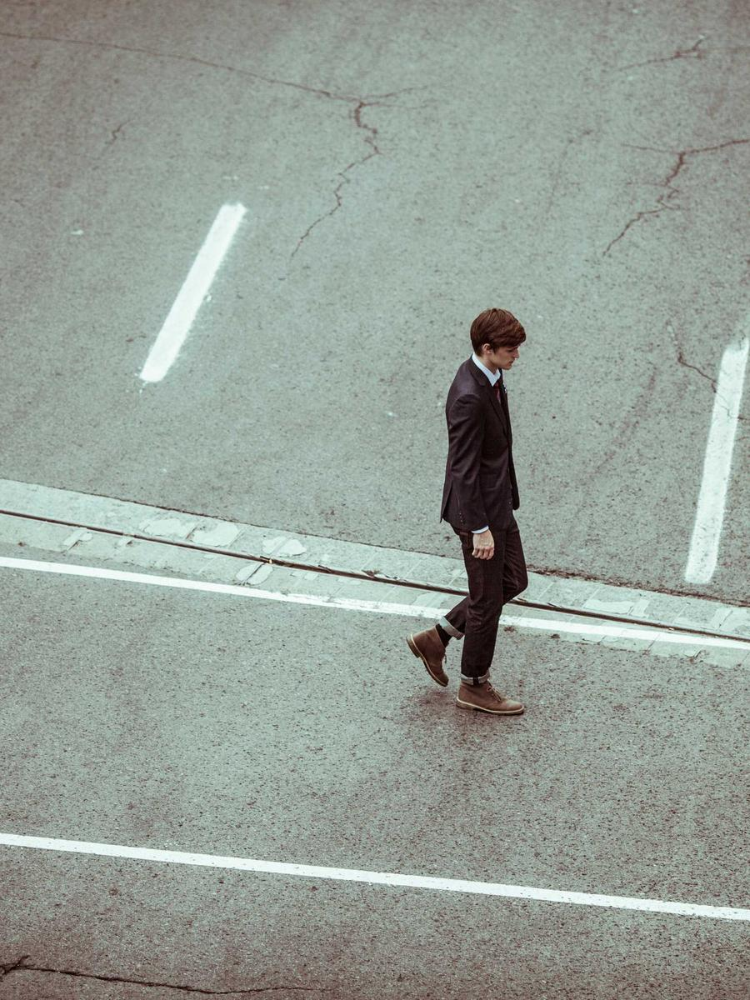
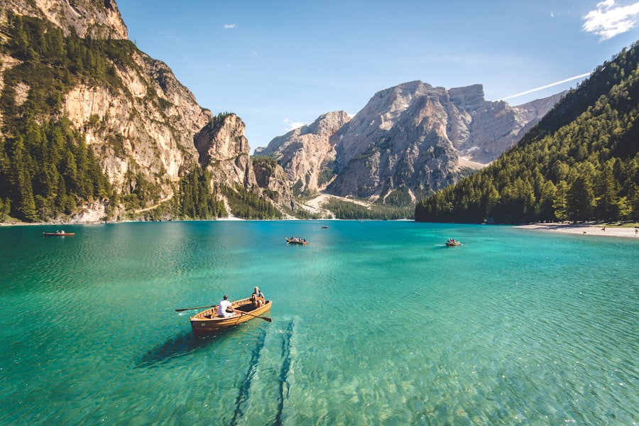
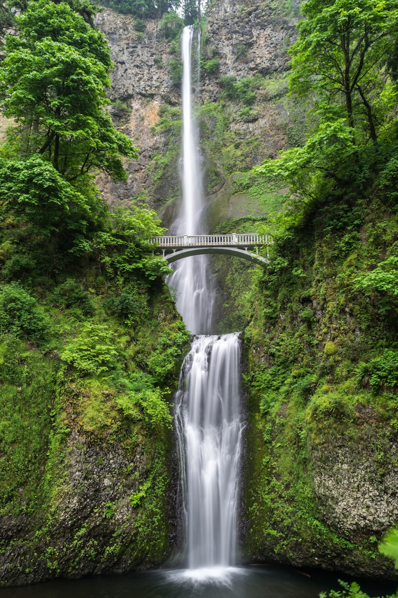
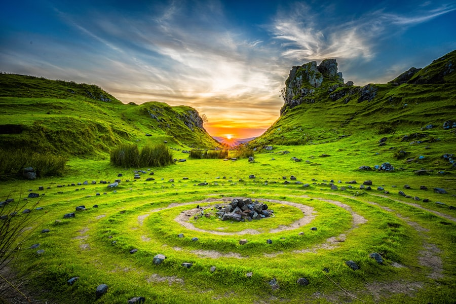
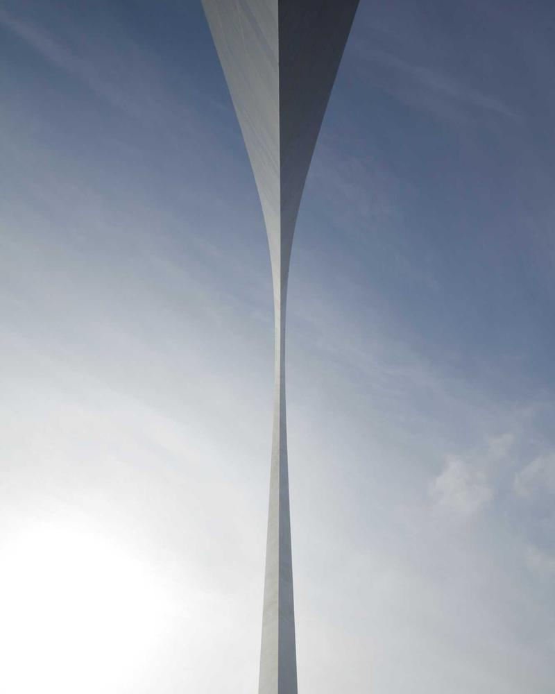

01
精选作品
每一帧，都是与光的对话

云雾山谷
苏格兰 · 斯凯岛
林间小径
森林 · 自然
都市行迹
街拍 · 城市
湖上舟影
意大利 · 布莱耶斯湖
双层瀑布
美国 · 俄勒冈逆光草海
自然 · 黄昏海平落日
海洋 · 黄昏
银河雪山
星空 · 长曝光
石阵夕照
苏格兰 · 仙女谷
雪岭晴空
高山 · 风光
02
关于 WJZ
我是一名独立摄影师，专注于风光、人文与城市建筑摄影。相信简约的画面能承载最纯粹的情感，追求每一张照片中的平衡、留白与光线。
作品曾发表于多家视觉媒体，亦持续在个人项目中探索东方美学与现代摄影语言的融合。
- 120+拍摄地点
- 8年经验
- ∞对光的热爱